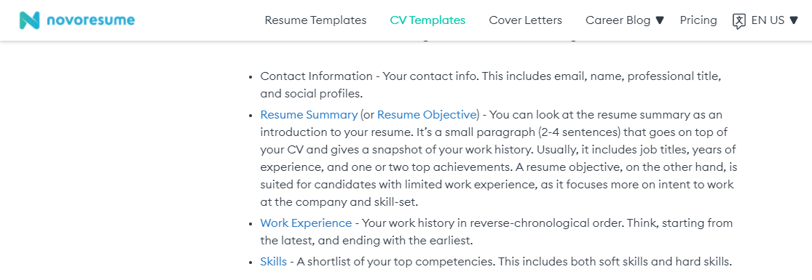

CV
The left side picture is the CV that I have taken as a reference. I have tried to implement the whole CV in my webpage. The CSS tag used for styling the CV webpage include display:flex tag that divides the page into sections. The display;flex tag is used inside the div tag used in html. I also learned that background color can be added to certain section as contact.
Date and Time

I wanted to use a date and time (Javascript) in all my webpages so, I have implemented it in all my webpages by taking reference from the above webpage. I learned to add function in JavaScript. The setTimeout (date,1000); function is used in JavaScript for running millisecond time in background.
Navigation Bar
The navigation bar was used similarly from the reference webpage. I learned to add hover effect to the nav tag used in the html tag. The hover effect adds beauty to the website as the user gets to know in which nav key the cursor is pointed.
Prompt Message
The prompt tag takes input as well as alerts message so I wanted to used the tag in Personal Detail webpage. I learned that we can add up more than one prompt tag in java function at a time so, I have added three prompt tag in Personal Detail webpage i.e, Name, Email and Phone no to contact with the respective person who have visited my webpage.
Using Image as link
Many webpages uses words as a link. I have slightly made a change and used image as a link in my webpage to open my social media accounts. I learned the href tag is used to link the file in html tag. The img src tag is also used to add image as a link.